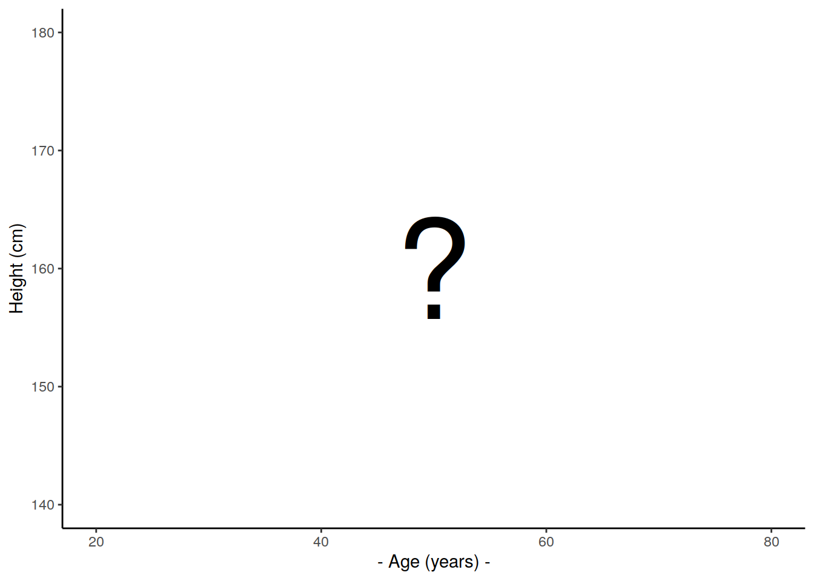
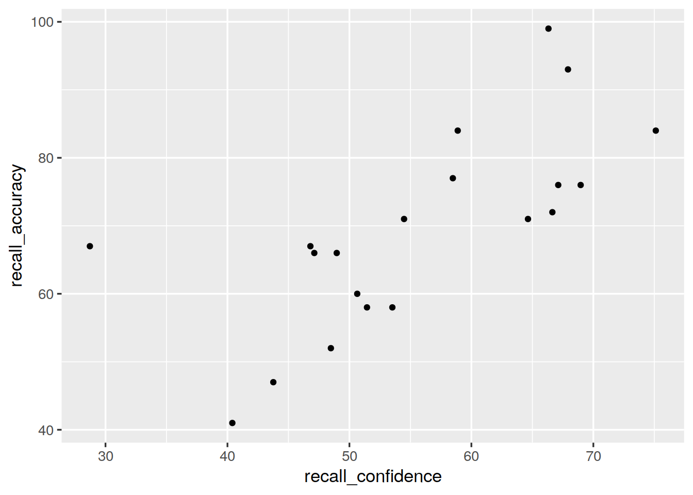
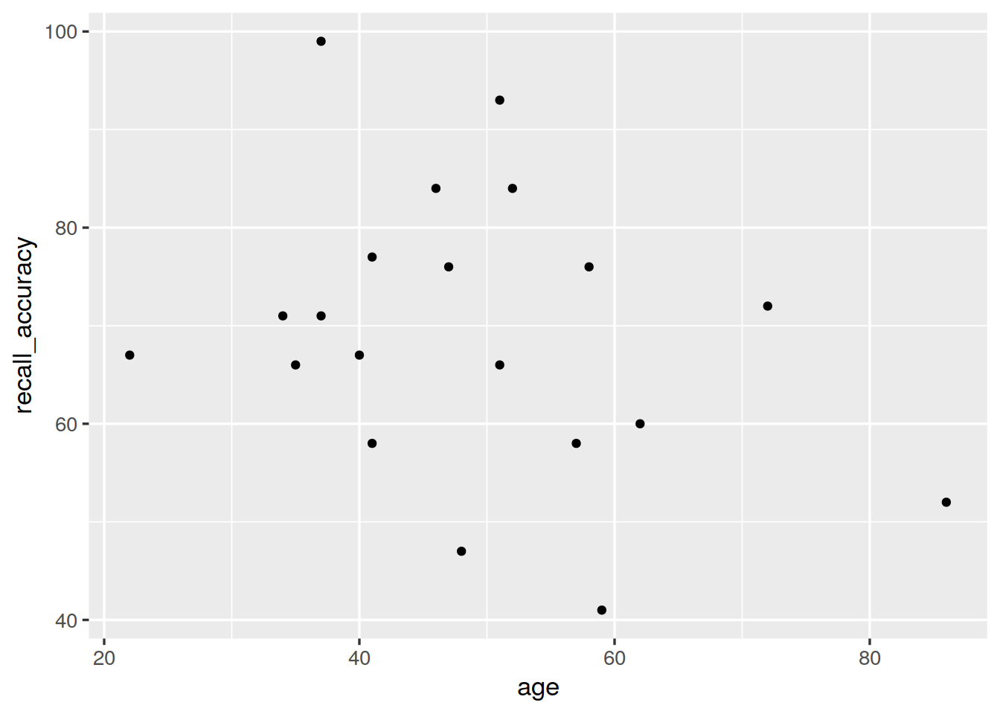
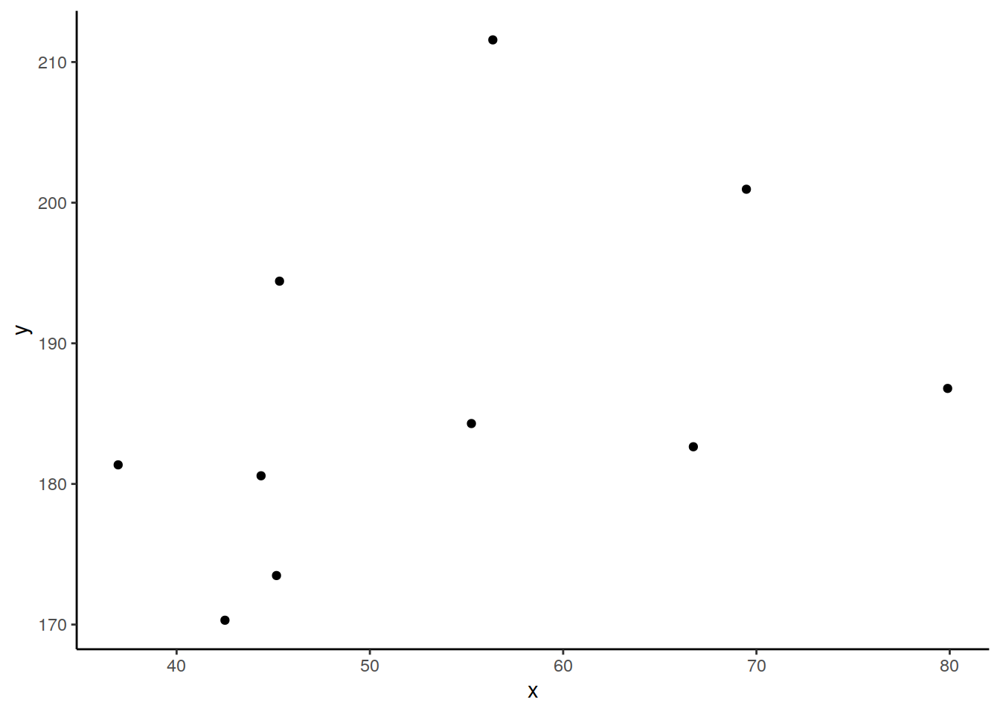
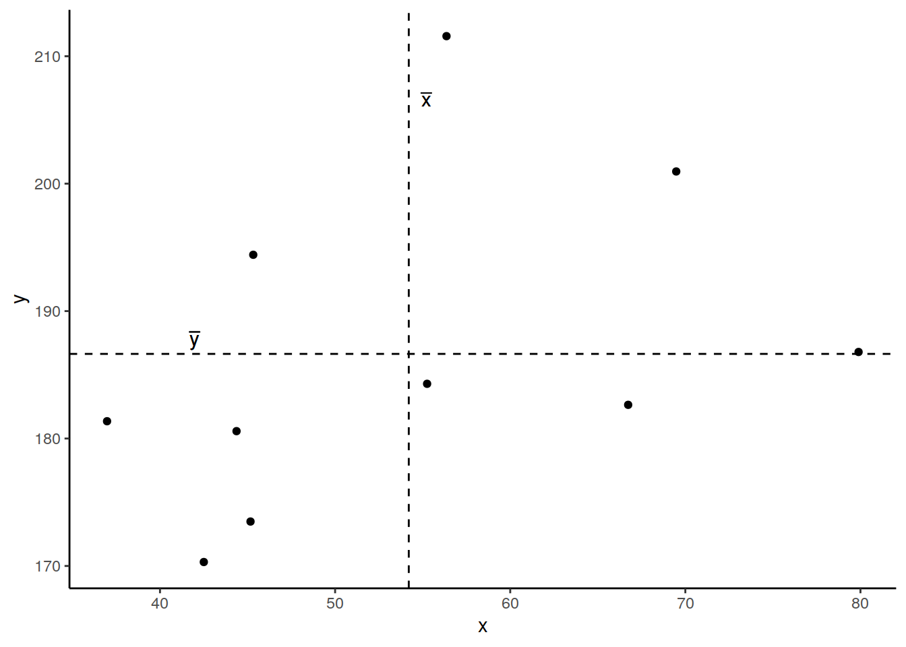
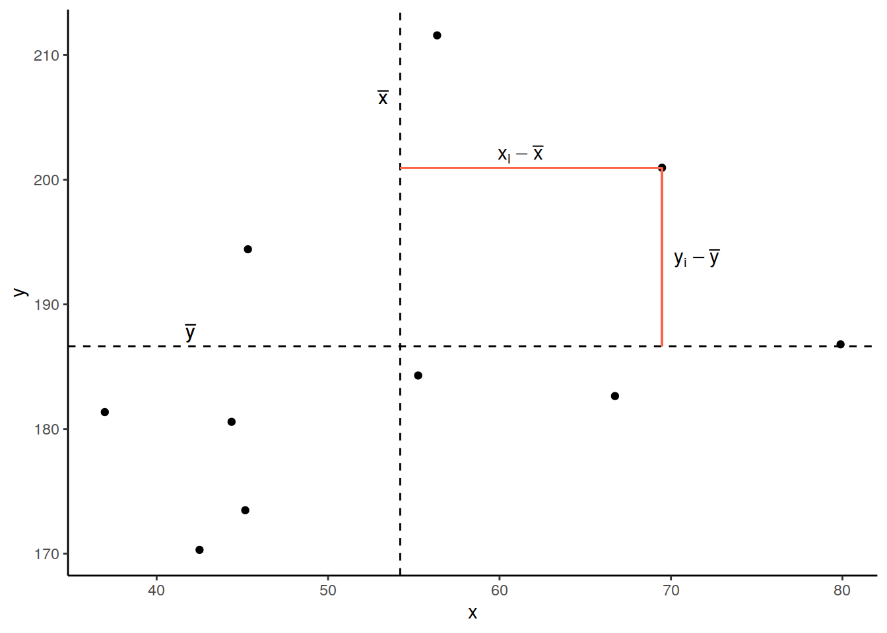
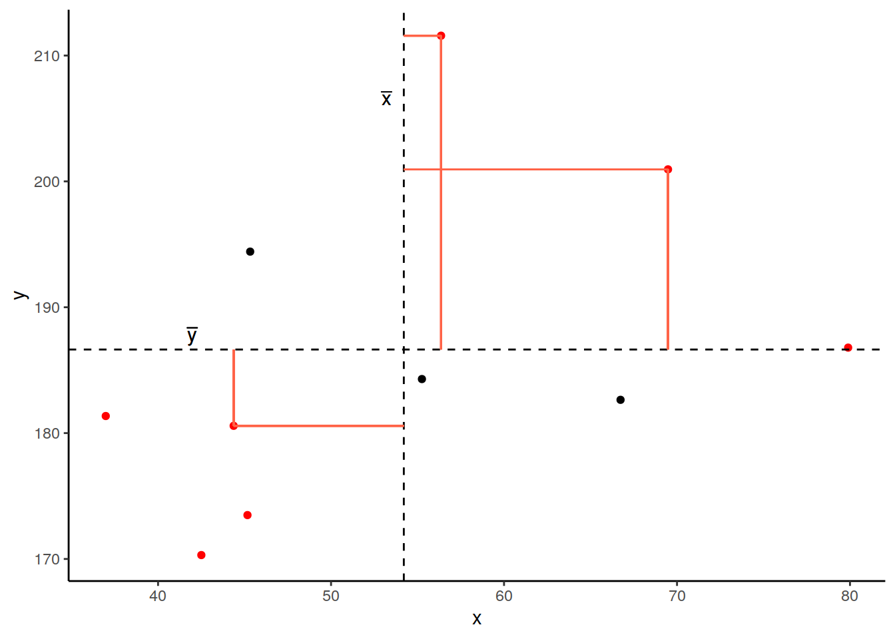
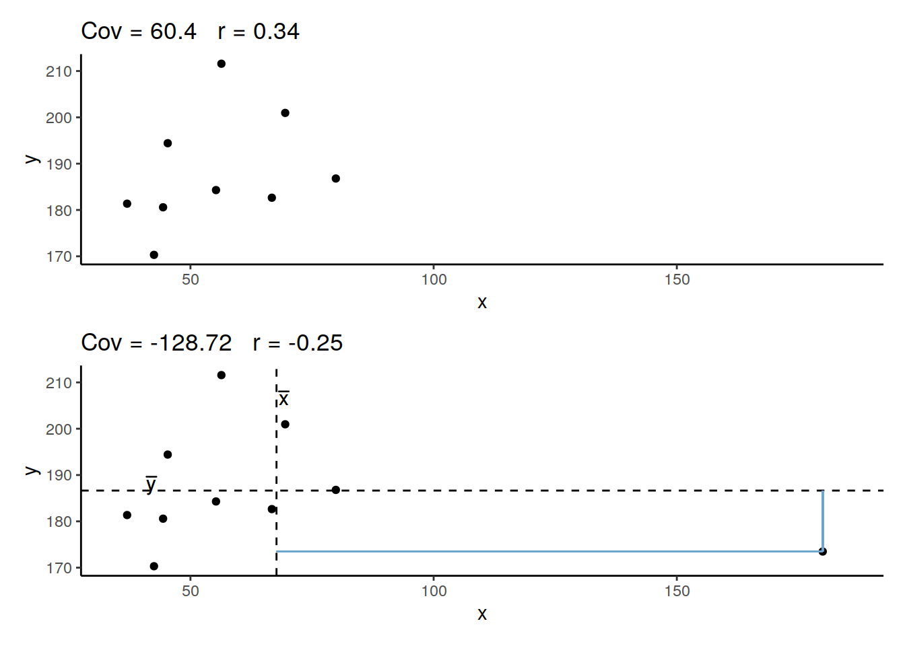

Chapter 20 Covariance and correlation
Instructions
- This week, we will have a walkthrough of some examples, followed by a set of questions for you to attempt on your own.
- Please create a new Rmarkdown file and work along with the walkthrough, then complete the lab exercises.
Learning outcomes
LO1. Understand when and how to calculate the summary statistics of covariance and correlation, and how to do this in R.
LO2. Learn what different strengths and directions of correlation look like when visualised as a scatterplot of two quantitative variables.
LO3. Learn how to conduct a test to determine whether a correlation is different from zero.
Recap
In weeks 16-18, we were working with quantitative response variables, and categorical explanatory variables.
| Test | Description |
|---|---|
| One-sample \(t\)-test | test for the significance of the difference between one mean (\(\mu\)) and some hypothesised value |
| Two-samples \(t\)-test | test for the significance of the difference between two means (\(\mu_1\) and \(\mu_2\)) |
| Paired-samples \(t\)-test | test for the significance of the difference between the mean difference (\(\mu_d\)) from paired samples and 0 |
Last week (week 19), we began working with categorical response variables. We discussed the chi-square goodness-of-fit test and the chi-square test of independence:
| Test | Description |
|---|---|
| \(\chi^2\) goodness-of-fit | tests whether categorical variable conforms with hypothesized proportions |
| \(\chi^2\) independence | tests whether categorical variable is related to another categorical variable |
This week, we will cover associations between two quantitative variables
Walkthrough
Visualisation
► Question A.1
How would you most often visualise the relationship between two quantitative variables?
What should we fill this plot with?

► Solution
Our data for this walkthrough is from a (hypothetical) study on memory. Twenty participants studied passages of text (c500 words long), and were tested a week later. The testing phase presented participants with 100 statements about the text. They had to answer whether each statement was true or false, as well as rate their confidence in each answer (on a sliding scale from 0 to 100). The dataset contains, for each participant, the percentage of items correctly answered, and the average confidence rating. Participants’ ages were also recorded.
► Question A.2
Read in the data from TODO and look at the dimensions of the data as well as some summary statistics.
Plot the relationship between the percentage of items answered correctly (recall_accuracy) and participants’ average self-rating of confidence in their answers (recall_confidence).
Plot the relationship between recall accuracy and age.
► Solution
## [1] 20 4## ppt recall_accuracy recall_confidence age
## Length:20 Min. :41.00 Min. :28.72 Min. :22.00
## Class :character 1st Qu.:59.50 1st Qu.:48.14 1st Qu.:39.25
## Mode :character Median :69.00 Median :54.00 Median :47.50
## Mean :69.25 Mean :55.42 Mean :48.80
## 3rd Qu.:76.25 3rd Qu.:66.40 3rd Qu.:57.25
## Max. :99.00 Max. :75.12 Max. :86.00

These two relationships look quite different.
- For participants who tended to be more confident in their answers, the percentage of items they correctly answered tends to be higher.
- The older participants were, the lower the percentage of items they correctly answered tended to be.
Which relationship are you more confident in and why?
Ideally, we would have some means of quantifying this sort of relationship…
There are two summary statistics which we can use to talk about the relationship between two quantitative variables: Covariance and Correlation
The notion of correlation may already be familiar to you, but to understand it better, we need to start with covariance.
Covariance
Covariance is the measure of how two variables vary together.
It is the change in one variable associated with the change in another variable.
For samples, covariance is calculated using the following formula:
\[\mathrm{cov}(x,y)=\frac{1}{n-1}\sum_{i=1}^n (x_{i}-\bar{x})(y_{i}-\bar{y})\]
where:
- \(x\) and \(y\) are two variables; e.g.,
ageandrecall_accuracy; - \(i\) denotes the observational unit, such that \(x_i\) is value that the \(x\) variable takes on the \(i\)th observational unit, and similarly for \(y_i\);
- \(n\) is the sample size.
A visual explanation
Consider the following scatterplot:

Now let’s superimpose a vertical dashed line at the mean of \(x\) (\(\bar{x}\)) and a horizontal dashed line at the mean of \(y\) (\(\bar{y}\)):

Now let’s pick one of the points, call it \(x_i\), and show \((x_{i}-\bar{x})\) and \((y_{i}-\bar{y})\).
Notice that this makes a rectangle.
As \((x_{i}-\bar{x})\) and \((y_{i}-\bar{y})\) are both positive values, their product - \((x_{i}-\bar{x})(y_{i}-\bar{y})\) - is positive.

In fact, for all these points in red, the product \((x_{i}-\bar{x})(y_{i}-\bar{y})\) is positive (remember that a negative multiplied by a negative gives a positive):

And for these points in blue, the product \((x_{i}-\bar{x})(y_{i}-\bar{y})\) is negative:

Now take another look at the formula for covariance:
\[\mathrm{cov}(x,y)=\frac{\sum_{i=1}^n (x_{i}-\bar{x})(y_{i}-\bar{y})}{n-1}\]
It is the sum of all these products divided by \(n-1\). It is the average of the products!
Manually calculating covariance
► Question A.3
We’re going to calculate the covariance between recall accuracy and recall confidence Create 2 new columns in the memory recall data, one of which is the mean recall accuracy, and one which is the mean recall confidence.
► Solution
► Question A.4
Now create three new columns which are:
- recall accuracy minus the mean recall accuracy - this is the \((x_i - \bar{x})\) part.
- confidence minus the mean confidence - and this is the \((y_i - \bar{y})\) part.
- the product of i. and ii. - this is calculating \((x_i - \bar{x})\)\((y_i - \bar{y})\).
► Solution
► Question A.5
Finally, sum the products, and divide by \(n-1\)
► Solution
► Question A.6
Check that you get the same results using cov() function.
Hint: cov() can take two variables cov(x = , y = ). Think about how you can use the $ to pull out the variables we are using here.
► Solution
Correlation (\(r\))
You can think of correlation as a standardized covariance. It has a scale from negative one to one, on which the distance from zero indicates the strength of the relationship.
Just like covariance, positive/negative values reflect the nature of the relationship.
The correlation coefficient is a standardised number which quantifies the strength and direction of the linear relationship between two variables.
- In a population, it is denoted by \(\rho\).
- In a sample, it is denoted by \(r\).
We saw in the lecture that we can calculate \(r\) using the following formula:
\[
r_{(x,y)}=\frac{\mathrm{cov}(x,y)}{s_xs_y}
\]
And we expanded this to:
\[
r_{(x,y)} = \frac{\frac{\sum_{i=1}^{n}{(x_i - \bar{x})(y_i - \bar{y})}}{n-1}}{\sqrt{\frac{\sum_{i=1}^{n}{(x_i - \bar{x})}^2}{n-1}} \sqrt{\frac{\sum_{i=1}^{n}{(x_i - \bar{x})}^2}{n-1}}}
\]
This looks like a lot!
But we can actually rearrange it to get the following:
\[
r_{(x,y)}=\frac{1}{n-1} \sum_{i=1}^n \left( \frac{x_{i}-\bar{x}}{s_x} \right) \left( \frac{y_{i}-\bar{y}}{s_y} \right)
\]
Notice that this is very similar to the formula for covariance, but the values \((x_i - \bar{x})\) are divided by the standard deviation (\(s_x\)), as are the values \((y_i - \bar{y})\) divided by \(s_y\).
This standardises all the values so that they are expressed as the distance in standard deviations from the mean (\(\bar x\)).
Properties of correlation coefficients
- \(-1 \leq r \leq 1\)
- The sign indicates the direction of association
- positive association (\(r > 0\)) means that values of one variable tend to be higher when values of the other variable are higher
- negative association (\(r < 0\)) means that values of one variable tend to be lower when values of the other variable are higher
- no linear association (\(r \approx 0\)) means that higher/lower values of one variable do not tend to occur with higher/lower values of the other variable
- The closer \(r\) is to \(\pm 1\), the stronger the linear association
- \(r\) has no units and does not depend on the units of measurement
- The correlation between \(x\) and \(y\) is the same as the correlation between \(y\) and \(x\)
Manually calculating correlation
► Question A.7
We calculated above that \(\mathrm{cov}(\texttt{recall_accuracy}, \texttt{recall_confidence})\) = 118.077.
To calculate the correlation, we simply divide this by the standard deviations of the two variables. \(s_{\texttt{recall_accuracy}} \times s_{\texttt{recall_confidence}}\)
► Solution
► Question A.8
However, just like R has a cov() function for calculating covariance, there is a cor() function for calculating correlation!
They work in a similar way. Try using cor() now and check that we get the same result as above (or near enough, remember that we rounded some numbers above).
► Solution
Game: Guess the \(r\)
Take a break and play this “guess the correlation” game to get an idea of what different strengths and directions of \(r\) can look like.
source: http://guessthecorrelation.com/
Testing significance of the correlation coefficient
Okay, now that we’ve seen the formulae for covariance and correlation, as well as how to quickly calculate them in R using cov() and cor(), we can use a statistical test to establish the probability of finding an association this strong by chance alone.
Hypotheses
Remember, hypotheses are about the population parameter (in this case the correlation between the two variables in the population - i.e., \(\rho\)).
Null Hypothesis
- There is not a linear relationship between \(x\) and \(y\) in the population.
\(H_0: \rho = 0\)
Alternative Hypothesis
- There is a positive linear relationship between \(x\) and \(y\) in the population.
\(H_1: \rho > 0\)
- There is a negative linear relationship between \(x\) and \(y\) in the population.
\(H_1: \rho < 0\)
- There is a linear relationship between \(x\) and \(y\) in the population.
\(H_1: \rho \neq 0\)
Test statistic
Our test statistic here is yet another \(t\) statistic, the formula for which depends on both the observed correlation (\(r\)) and the sample size (\(n\)):
\[t = r \sqrt{\frac{n-2}{1-r^2}}\]
\(p\)-value
We calculate the p-value for our \(t\)-statistic in the usual way:
- \(\mathrm{Pr}(T_{n-2} \leq t)\)
- \(\mathrm{Pr}(T_{n-2} \geq t)\)
- \(2 \times \mathrm{Pr}(T_{n-2} \geq |t|)\)
where \(T_{n-2}\) denotes a \(t\)-distribution with n - 2 degrees of freedom.
Assumptions
- Both variables are quantitative
- Both variables should be drawn from normally distributed populations.
- The relationship between the two variables should be linear.
- Homoscedasticity
In R, we can test the significance of the correlation coefficient really easily with the function cor.test():
##
## Pearson's product-moment correlation
##
## data: recalldata$recall_accuracy and recalldata$recall_confidence
## t = 4.1512, df = 18, p-value = 0.0005998
## alternative hypothesis: true correlation is not equal to 0
## 95 percent confidence interval:
## 0.3719603 0.8720125
## sample estimates:
## cor
## 0.6993654Or, if we want to calculate our test statistic manually:
#calculate r
r = cor(recalldata$recall_accuracy, recalldata$recall_confidence)
#get n
n = recalldata %>%
summarise(n=n()) %>% pull(n)
#calculate t
tstat = r * sqrt((n - 2) / (1 - r^2))
#calculate p-value for t, with df = n-2
2*(1-pt(tstat, df=18))## [1] 0.0005998222Extras: Correlation matrix
Lots of psychological datasets will have many many related variables. For instance, if a researcher was interested in job satisfaction, they might give a questionnaire to participants, and we would end up with a dataset with lots of variables (one for each question).
We will often want to quickly summarise the relationship between all possible pairs of variables, and we can do this using the hetcor() function from the polycor package, and giving it a set of variables (or a whole dataset).
You probably won’t have the package polycor yet, so you’ll need to install it first.
Refresher: Installing and loading packages
► Question A.9
- Install the
polycorpackage.
- Load the
polycorpackage.
- Read in the job satisfaction data from https://edin.ac/2UjBai1. It is a .csv.
- Create a correlation matrix using the function
hetcor(), and name itcormat.
- Pull out the correlation matrix using
cormat$correlations.
► Solution
It is often to difficult to get a good view of the strength and direction of correlations when they are all printed out.
Luckily, we can easily visualise a correlation matrix as a heatmap.
► Question A.10
- Install the
pheatmappackage.
- Load the
pheatmappackage. - visualise your correlation matrix using the function
pheatmap().
► Solution
Cautions!
Correlation is an invaluable tool for quantifying relationships between variables, but must be used with care.
Below are a few things to be aware of when we talk about correlation.
1 - Correlation can be heavily affected by outliers. Always plot your data!
The two plots below only differ with respect to the inclusion of one observation. However, the correlation coefficient for the two sets of observations is markedly different.

2 - r = 0 means no linear association. The variables could still be otherwise associated. Always plot your data!
The correlation coefficient in Figure 20.1 below is negligible, suggesting no linear association. The word “linear” here is crucial - the data are very clearly related.
Figure 20.1: Unrelated data?

Figure 20.2: Datasaurus!
Source: Matejka, J., & Fitzmaurice, G. (2017, May). Same stats, different graphs: generating datasets with varied appearance and identical statistics through simulated annealing. In Proceedings of the 2017 CHI Conference on Human Factors in Computing Systems (pp. 1290-1294).
3 - Correlation does not imply causation!

Figure 20.3: https://imgs.xkcd.com/comics/correlation.png
You will have likely heard the phrase “correlation does not imply causation”. There is even a whole wikipedia entry devoted to the topic.
Just because you observe an association between x and y, we should not deduce that x causes y
An often cited paper (See Figure 20.4) which appears to fall foul of this error took a correlation between a country’s chocolate consumption and its number of nobel prize winners to suggest a causal relationship between the two:

Figure 20.4: Chocolate consumption causes more Nobel Laureates?
“since chocolate consumption has been documented to improve cognitive function, it seems most likely that in a dose-dependent way, chocolate intake provides the abundant fertile ground needed for the sprouting of Nobel laureates”
[Messerli, Franz. Chocolate Consumption, Cognitive Function, and Nobel Laureates. The New England Journal of Medicine 2012; 367:1562-4, (http://www.nejm.org/doi/full/10.1056/NEJMon1211064)]
Lab
Sleep levels and daytime functioning
A researcher is interested in the relationship between hours slept per night and self-rated effects of sleep on daytime functioning.
She recruited 50 healthy adults, and collected data on the Total Sleep Time (TST) over the course of a seven day period via sleep-tracking devices.
At the end of the seven day period, participants completed a Daytime Functioning (DTF) questionnaire. This involved participants rating their agreement with ten statements (see Table 20.1). Agreement was measured on a scale from 1-5.
An overall score of daytime functioning can be calculated by:
- reversing the scores of items 4, 5 and 6.
- Taking the sum of scores across items.
- Subtracting the summed scores from 50 (the max possible score).
Note: Step 1 is undertaken because those items reflect agreement with positive statements, whereas the other ones are agreement with negative statements. In step 3, subtracting the summed scores from 50 will simply reverse the overall score, meaning that higher scores will indicate better perceived daytime functioning.
| Item | Statement |
|---|---|
| Item_1 | I often felt an inability to concentrate |
| Item_2 | I frequently forgot things |
| Item_3 | I found thinking clearly required a lot of effort |
| Item_4 | I often felt happy |
| Item_5 | I had lots of energy |
| Item_6 | I worked efficiently |
| Item_7 | I often felt irritable |
| Item_8 | I often felt stressed |
| Item_9 | I often felt sleepy |
| Item_10 | I often felt fatigued |
► Question B.1
Read in the data, and calculate the overall daytime functioning score, following the criteria outlined above. Make this a new column in your dataset.
Hint: to reverse items 4, 5 and 6, we we need to make all the scores of 1 become 5, scores of 2 become 4, and so on…
What number satisfies all of these equations?:
- ? - 5 = 1
- ? - 4 = 2
- ? - 3 = 3
► Solution
► Question B.2
Calculate the correlation between the total sleep time (TST) and the overall daytime functioning score.
► Solution
► Question B.3
Conduct a test to establish the probability of observing a correlation this strong in a sample of this size assuming the true correlation to be 0.
Write a sentence or two summarising the results.
► Solution
► Question B.4
Create a correlation matrix of the items in the daytime functioning questionnaire.
You will first need to select the relevant columns.
► Solution
► Question B.5
Visualise your correlation matrix using pheatmap() from the pheatmap package.
► Solution
► Question B.6
Spend a bit of time thinking about what this correlation matrix shows you, and read the item statements again (Table 20.1).
Try creating and visualising a new correlation matrix using the reversed items 4, 5, and 6. What do you expect to be different?
► Solution
► Question B.7
What Items on the daytime functioning questionnaire correlate most strongly with the Total Sleep Time (TST)?
► Solution